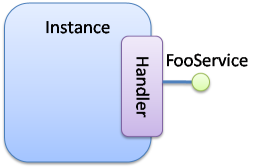
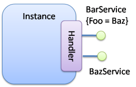
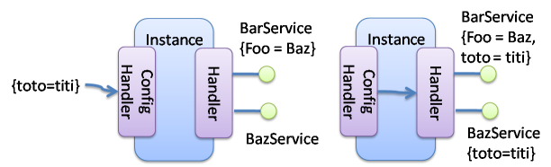

Providing OSGi services
This pages explains how to publish OSGi services with iPOJO. It presents:
- service publication
- service properties publication and management
- service object creation and creation strategies
- service un-registration
- configuration property propagation
- the management of the exposition from the implementation class
- Providing OSGi services
- A simple example
- Service Publication
- Service Properties
- Advanced features
- Service Serving & Object Creation
- Providing Several Services (XML only)
- Service Property Propagation
- Instance reconfiguration
- Publishing an abstract or concrete class as a Service
- Controlling the service exposition from the implementation class
- Being notified of the service registration and unregistration
A simple example
The following code snippet shows a simple class implementing the FooService interface:
@Component @Provides public class FooProviderType1 implements FooService { private String m_foo = "foo"; public void foo() { System.out.println("foo " + m_foo); } }
To provide a service, the implementation class MUST implement the service interface.
In XML, to provide the service, the component type needs to contain the <provides/> element:
<component className="...FooProviderType1"> <provides/> </component>

The <provides/> or @Provides suffice to declare that each instance of this type will provide the FooService (for more info about instances see 'How to use iPOJO factories`). The provided specifications can be discovered by analyzing the implementation class. By default, all implemented interface are published in the same service registration. iPOJO looks down the entire inheritance tree.
Service Publication
The provided service handler manages service publication. For each declared <provides/>, the handler registers a service. Since the @Provides annotation can be used only once, only one service is registered that provides all interfaces. The service is published as long as the instance is valid. If the instance becomes invalid, the service is removed from the service registry.
By default, it publishes all interfaces implemented by the implementation class of the component class. It collects all super-interfaces (interfaces implemented by implemented interfaces and by the super class). However, it is possible to explicitly declare which service specifications are published with the specifications attribute, such as:
@Component @Provides(specifications={FooService.class}) public class FooProviderType1 implements FooService, Runnable { // ... }
Specification checking
If you use the specifications attribute, the handler checks that all declared interfaces are really implemented by the implementation class. If an interface is not implemented, the handler logs a warning.
No service
If the implementation class does not implement any interface, you cannot provide a service. In this case, the handler throws an error.
Service Properties
You can also attach properties to a service registration. Service properties are attached to published service and allow consumer filtering/selecting providers. A property can be attached to a field (contained in the component implementation class), and so can be handle dynamically.
Let's take a new example very closed of the last one:
@Component @Provides public class FooProviderType1 implements FooService { @ServiceProperty(name="foo", value="Foo") private String m_foo; public void foo() { System.out.println("foo " + m_foo); m_foo = "bar"; } }
Using XML, it gives:
<component classname="...FooProviderType1"> <provides> <property name="foo" field="m_foo" value="Foo"/> </provides> </component>
The declared property is attached to the m_foo field. This property is published with the name foo. This property has a default value "Foo". This value will be injected into the m*foo field, when this field asks for a value. A property with a field attribute does not need to declare a type (the type can be discovered by analyzing the implementation class).
The implementation class set a new value to the m_foo field in the code. When this action occurs, the service publication is updated. If a published property value becomes null, the property is unpublished since it has a new value.
You can also publish 'static' properties (not attached to a field):
@Component @Provides(properties= { @StaticServiceProperty(name="static", type="java.lang.String", value="this is a static property") }) public class FooProviderType1 implements FooService { @ServiceProperty(name="foo", value="Foo") private String m_foo; public void foo() { System.out.println("foo " + m_foo); m_foo = "bar"; } }
The second property (Static) is published as a static property. This property is not attached to a field, so, we need to declare the property type. All primitive types or objects can be used has property type (for object, the qualified name of the class is used as java.lang.String).
In XML, this can also be done:
<component classname="...FooProviderType1"> <provides> <property name="foo" field="m_foo" value="Foo"/> <property name="static" type="java.lang.String" value="this is a static property"/> </provides> </component>
Properties may have a default value (set using the value attribute). This value will be used as initial value. The value can be given in the instance configuration. The default value will be overridden in this case:
<instance component="...FooProviderType1"> <property name="foo" value="My New Foo Value"/> <property name="static" value="My Value For Static"/> </instance>
Properties can also be 'mandatory'. Mandatories properties must receive a value from the instance configuration. If the instance configuration forgets a mandatory properties, the configuration is rejected. Mandatory attribute let you be sure to receive the complete set of initialization values:
@Component @Provides public class MyComponent implements MyService { @ServiceProperty(name="username", mandatory=true) private String m_username; @Property(name="password", mandatory=true) private String m_password; //... }
For the previous components:
(name=myname, password=****)is a valid configuration(password=****)is an invalid configuration that will be rejected by iPOJO
Advanced features
Service Serving & Object Creation
When a consumer requires the published service, the handler sends an object (from the component class) of the implementation class. By default, it is always the same POJO object. If no objects already exists, an instance is created.
However, the handler supports the OSGi Service Factory. In this case, for each requester bundle, the handler sends a new object. To activate this policy, add the strategy attribute in the provides element:
@Component @Provides(strategy="SERVICE") public class MyComponent implements MyService { //... }
or:
<provides strategy="SERVICE"/>
Other strategies are available:
* strategy="instance" allows creating one service object per iPOJO instance using the service
* it is possible to create your own creation strategy by extending the org.apache.felix.ipojo.handlers.providedservice.CreationStrategy class and by indicating the qualified class name in the strategy attribute:
@Component @Provides(strategy="org.acme.foo.MyCreationStrategy") public class MyComponent implements MyService { //... }
Providing Several Services (XML only)
In XML, you can declare several provides inside the same component. All those provided services will be managed individually, so will be published using several publication (i.e. org.osgi.frameowrk.ServiceRegistration). This case is useful when service properties are different for the different services.
<component classname="...FooProviderType1"> <provides specifications="...Foo"/> <provides specifications="...Bar"> <property name="foo" value="baz"/> </provides> </component>

Service Property Propagation
The configuration handler has the possibility to propagate received properties to service publication. So, when the propagation is activated (on the properties element or on the @Component annotation), all properties received by the configuration handler will be propagated to all published services. If some properties are mapped on methods, these methods are invoked with the new value in argument.

If an instance configuration contains properties starting with service., they are automatically propagated. In the following example, the service.pid is automatically propagated.
<instance component="..."> <property name="service.pid" value="my.pid"/> </instance>
Instance reconfiguration
iPOJO supports instance reconfiguration. When an instance is dynamically reconfigured and if the instance published service properties, the values are updated with the new configuration. For example, let's take the following component.
@Component @Instantiate @Provides public class MyComponent implements MyService { @ServiceProperty(name="prop", value="initial") private String myProp; //... }
The previous code also declares an instance (created without any configuration). This instance registers MyService with the service property prop=initial. If this instance is reconfigured using a configuration like: {prop="my value"}, the published properties will be updated with the new value, so prop=my value.
Publishing an abstract or concrete class as a Service
It is also possible to expose an abstract or concrete class as a service. To to this, just specify the published class in the specifications attribute:
@Component @Provides(specifications=MyComponent.class) public class MyComponent { // ... }
or in XML:
<component classname="...FooProviderType1"> <provides specifications="...AbstractFoo"/> </component> <component classname="...FooBarProviderType1"> <provides specifications="[...AbstractFoo, ...Bar]"/> </component>
As illustrated with the example using annotation, the component can also publish itself as a service. However, such practice is not recommended.
Controlling the service exposition from the implementation class
To control the exposition of the published service, you can use a service controller. A service controller is a boolean field of the component class. The injected boolean field allows the code to impact the service publication. Setting the field to false unregisters the service from the service registry. Setting it back to true re-publishes the service.
@Component @Provides public class ControllerCheckService implements FooService, CheckService { @ServiceController private boolean controller; // Service Controller public boolean foo() { return controller; } public boolean check() { System.out.println("Before : " + controller); controller = ! controller; // Change the publication System.out.println("After : " + controller); return controller; } }
Using XML, the previous component description is:
<component classname="org.apache.felix.ipojo.test.scenarios.component.controller.ControllerCheckService" name="PS-Controller-1-default"> <provides> <controller field="controller"/> </provides> </component>
The controller may have a value attribute setting the initial value. Setting this value to false disables the initial service registration:
@Component @Provides public class ControllerCheckService implements FooService, CheckService { @ServiceController(value=false) private boolean controller; // Service Controller public boolean foo() { return controller; } public boolean check() { System.out.println("Before : " + controller); controller = ! controller; // Change the publication System.out.println("After : " + controller); return controller; } }
If several interfaces are exposed, the controller may have a specification attribute indicating the impacted service:
@Component @Provides public class ControllerCheckService implements FooService, CheckService { @ServiceController(value=false, specification=FooService.class) private boolean controller; // Service Controller public boolean foo() { return controller; } public boolean check() { System.out.println("Before : " + controller); controller = ! controller; // Change the publication System.out.println("After : " + controller); return controller; } }
In XML, each provides can have one controller element.
<component classname="org.apache.felix.ipojo.test.scenarios.component.controller.ControllerCheckService" name="PS-Controller-1-false"> <provides> <controller field="controller" value="false"/> </provides> </component>}
Being notified of the service registration and unregistration
You can also be notified when the service is published and unpublished. This is done by specifying the two callbacks in the <provides/> element:
<component classname="org.apache.felix.ipojo.test.scenarios.component.callbacks.CallbacksCheckService" name="PS-Callbacks-both-1"> <provides specifications="org.apache.felix.ipojo.test.scenarios.ps.service.FooService" post-unregistration="unregistered" post-registration="registered"/> <provides specifications="org.apache.felix.ipojo.test.scenarios.ps.service.CheckService" post-unregistration="unregistered" post-registration="registered"/> </component>
Or by using the @PostRegistration and @PostUnregistration annotations:
@PostRegistration public void registered(ServiceReference ref) { System.out.println("Registered"); } @PostUnregistration public void unregistered(ServiceReference ref) { System.out.println("Unregistered"); }
- The
post-registrationcallback is called after the service publication - The
post-unregistrationcallback is called after the service unpublication
Those callback methods must have the following signature: public void name(ServiceReference ref). So they receive the published / unpublished service reference. The callbacks are called in the same thread as the publication / unpublication itself.